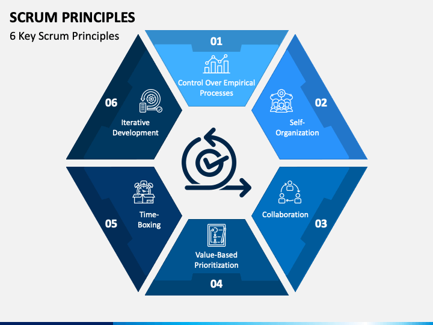
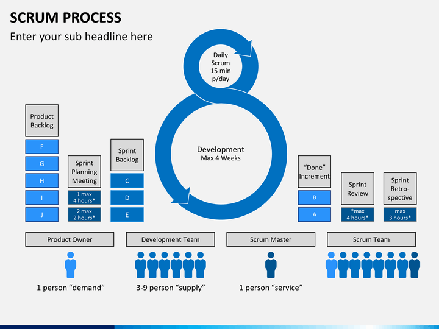

What is Scrum?
- is an agile project management methodology that helps teams structure and manage work around a set of values, principles, and practices.
### central idea - - learn from experience, self-organize and prioritize, analyze your wins and losses in order to constantly improve.

### Empirical Process Control - consistent process control, allows to implement three basic ideas - transparency, control and adaptation
### Self-organization - while Scrum supports teamwork, it also focuses on empowering each individual on the team.
### Collaboration - is at the core of the Scrum model of agile development, this principle provide a reliable foundation for project management and development process.
### Value-based Prioritization - implementation of this principle in the beginning of the project allows you to gain one of the key benefits of Scrum - maximum project value.
### Time-boxing - allows teams to deliver the final result on time regardless of the complexity and project size.
### Iterative Development - Scrum incorporates phases. After a phase (which usually represents creating a part of the product) is over, the client leaves their feedback, the team makes all necessary changes, and then the everybody proceeds to the next stage of the Scrum model
## Scrum Team - The Product Owner - The Scrum Master - Developers
### The Product Owner - is accountable for maximizing the value of the product resulting from the work of the Scrum Team. - represents the customer, manages the product backlog, and helps set priorities for the development team.
### The Scrum Master - maintains the Scrum culture within the team and ensures that its principles are followed. - Master works with each member of the Scrum team to provide the necessary guidance and training to achieve the principles of Scrum
### Development Team - self-organizing and cross-functional units responsible for the execution of tasks and aiming at a solid final result. - chooses what work needs to be done, delivers increments, and is collectively accountable.
What is sprint?
## Sprint - a short period of time during which a scrum team completes a given amount of work - are fixed duration events of one month or less to ensure consistency - the team commits to delivering an increment of sufficient value by the end of each sprint.
#### All work required to achieve the product goal, including - sprint planning - daily scrums - sprint review - sprint retrospective

### sprint planning - is the event in scrum that marks the start of the sprint - an event where the team together answers two basic questions: what work can be done in this sprint and how will it be done? - duration: typically about one hour per week of iteration
### daily scrums - purpose - to inspect progress toward the Sprint Goal and adapt the Sprint Backlog as necessary, adjusting the upcoming planned work. - duration: a 15-minute event for the Developers of the Scrum Team.
### sprint review - purpose - to inspect the outcome of the Sprint and determine future adaptations. - is the second to last event of the Sprint and is timeboxed to a maximum of four hours for a one-month Sprint.
### sprint retrospective - purpose - to plan ways to increase quality and effectiveness - is timeboxed to a maximum of three hours for a one-month Sprint.
What is Scrum Artifacts?
### Scrum Artifacts - product backlog - sprint backlog - product increment
### product backlog - is a list of new features, enhancements, bug fixes, jobs, or work requirements needed to build a product.
### sprint backlog - are organized as follows: a task from the product backlog is divided into smaller work tasks that can be completed in a sprint.
### product increment - is the results of work on tasks from the product backlog obtained during a sprint, ready for delivery to the client. It also contains increments from all previous sprints.
Scrum Model Advantages & Disadvantages
### Scrum Methodology Advantages - Increased productivity in complex and innovative projects - Efficient utilization of time and resources - Allows for faster completion of marketing projects - Allows to build high-quality products - High employee satisfaction - High client satisfaction
### Scrum Framework Disadvantages - Projects often lack focus and clarity at certain stages - Requires skilled personnel/robust training - May sometimes require organizational transformation - Too many steps needed to scale large projects - Daily meetings may be frustrating
The End